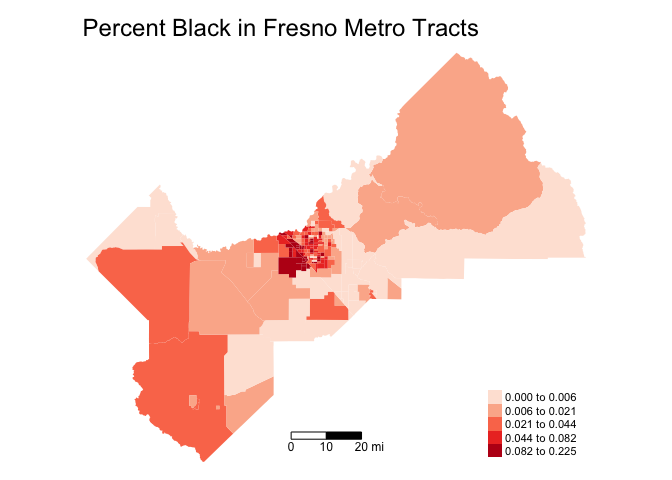
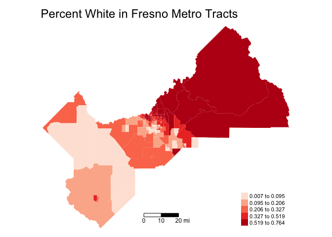
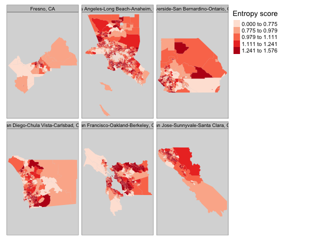

Lab 6a: Residential Segregation
CRD 230 - Spatial Methods in Community Research
Professor Noli Brazil
February 9, 2021
In this guide you will learn how to calculate neighborhood segregation and diversity measures using R. The objectives of the guide are as follows
- Calculate the following measures of regional level racial residential segregation: Dissimilarity, Interaction and Entropy
- Calculate the following measure of neighborhood level racial diversity: Entropy scores
To accomplish these objectives, you will be working with Census tract data for the six largest metropolitan areas in California (excluding Sacramento): Los Angeles, San Diego, San Jose, San Francisco, Riverside/San Bernardino, and Fresno. This lab guide follows closely and supplements the material presented in Handout 5a.
Installing and loading packages
We will not be using any new packages in this lab. Hooray!
You’ll need to load the following packages. Unlike installing, you will always need to load packages whenever you start a new R session. You’ll also always need to use library() in your R Markdown file.
library(sf)
library(tidyverse)
library(tidycensus)
library(tigris)
library(tmap)
library(knitr)Bringing in tract data
The following code uses the Census API to bring in 2015-2019 American Community Survey demographic and socioeconomic tract-level data for the six most populated metropolitan areas in California: Los Angeles, San Diego, San Jose, San Francisco, Riverside/San Bernardino, and Fresno. We won’t go through each line of code in detail because we’ve covered all of these operations and functions in prior labs. I’ve embedded comments within the code that briefly explains what each chunk is doing. Go back to prior guides (or RDS/GWR) if you need further help.
# Bring in census tract data using the Census API
ca.tracts <- get_acs(geography = "tract",
year = 2019,
variables = c(tpop = "B01003_001", tpopr = "B03002_001",
nhwhite = "B03002_003", nhblk = "B03002_004",
nhasn = "B03002_006", hisp = "B03002_012"),
state = "CA",
survey = "acs5",
output = "wide",
geometry = TRUE)
# Make the data tidy, calculate and keep essential vars. Also take out zero population tracts
#rename_with takes out the E at the end of the estimate variable names
ca.tracts <- ca.tracts %>%
rename_with(~ sub("E$", "", .x), everything()) %>%
mutate(pnhwhite = nhwhite/tpopr, pnhasn = nhasn/tpopr,
pnhblk = nhblk/tpopr, phisp = hisp/tpopr, oth = tpopr - (nhwhite+nhblk+nhasn+hisp),
poth = oth/tpopr, nonwhite = tpopr-nhwhite, pnonwhite = nonwhite/tpopr) %>%
select(c(GEOID,tpop, tpopr, pnhwhite, pnhasn, pnhblk, phisp,
nhwhite, nhasn, nhblk, hisp, nonwhite, pnonwhite, oth, poth)) %>%
filter(tpop != 0)
# Bring in metro area boundary
cb <- core_based_statistical_areas(cb = TRUE)
# Keep six largest metros in CA (excluding Sacramento)
large.metros <- filter(cb, grepl(c("Los Angeles|San Diego|San Jose|San Francisco|Riverside|Fresno"), NAME))
#Keep tracts in large metros. Drop unnecessary variables
large.tracts <- st_join(ca.tracts, large.metros, join = st_within, left=FALSE) %>%
select(-(c(ALAND, AWATER, AFFGEOID)))Mapping
Before calculating segregation measures, you should map neighborhood racial/ethnic composition in order to gain a visual understanding of how race/ethnic groups are spatially distributed in your study region. For example, let’s map percent non-Hispanic black in Fresno
large.tracts %>%
filter(GEOID.y == 23420) %>%
tm_shape(unit = "mi") +
tm_polygons(col = "pnhblk", style = "quantile",palette = "Reds",
border.alpha = 0, title = "") +
tm_scale_bar(breaks = c(0, 10, 20), text.size = 0.75, position = c("center", "bottom")) + tm_layout(main.title = "Percent Black in Fresno Metro Tracts",
frame = FALSE)
How does the distribution compare to percent non-Hispanic white?
large.tracts %>%
filter(GEOID.y == 23420) %>%
tm_shape(unit = "mi") +
tm_polygons(col = "pnhwhite", style = "quantile",palette = "Reds",
border.alpha = 0, title = "") +
tm_scale_bar(breaks = c(0, 10, 20), text.size = 0.75, position = c("center", "bottom")) + tm_layout(main.title = "Percent White in Fresno Metro Tracts",
frame = FALSE)
Map the other two race/ethnic groups in Fresno and all the groups in the other five metropolitan areas.
Residential segregation
Measures of segregation and other indices of place-based inequality have been fundamental to documenting and understanding the causes and consequences of residential patterns of racial separation. Let’s calculate the two most common measures of racial segregation: Dissimilarity, which captures residential evenness, and Interaction, which measures exposure. The Dissimilarity and Interaction indices are two-group measures of segregation. We will also calculate the Entropy Index, a multi-group measure of segregation.
Segregation operationalized as disparities in residential contact with White households is a convention that dominates the literature. It is widely understood that neighborhood resources important for more favorable life chances and social mobility often tend to positively correlate with neighborhood percent White (Alba and Logan 1993). Predominantly White neighborhoods typically hold more advantages and resources due to the power and status leveraged by White neighborhoods, particularly affluent White neighborhoods. Additionally, there is an important technical benefit, which is that neighborhood percent White is a key component of all widely used indices of residential segregation where segregation is conceptualized as residential separation from the dominant group. Accordingly, we calculate segregation using White households as the reference based on its relevance for social stratification dynamics in U.S. urban areas and its technical centrality in segregation measurement. I do not endorse normative prescriptions implying that living in White neighborhoods should or would be preferable as a goal in itself. Rather, I take neighborhood percent White as an important outcome for measuring and understanding residential segregation in both its patterns and consequences.
Dissimilarity Index
The most common measure of residential evenness is the Dissimilarity Index D. To calculate D, we’ll follow the Dissimilarity index formula on page 3 of Handout 5a. We will calculate Black/White, Hispanic/White, Asian/White, and non-White/White Dissimilarity. We first need to calculate the total population by race/ethnicity for each metro. This is the value \(T_m\) and \(T_k\) in the formula. We do this by using the group_by() and mutate() functions.
large.tracts <- large.tracts %>%
group_by(NAME) %>%
mutate(nhwhitec = sum(nhwhite), nonwhitec = sum(nonwhite),
nhasnc = sum(nhasn), nhblkc = sum(nhblk), othc = sum(oth),
hispc = sum(hisp), tpoprc = sum(tpopr)) %>%
ungroup()The group_by() function tells R that all future functions on large.tracts will be grouped according to the variable NAME, which is the metro name. We use the sum() function within the mutate() function to sum up, for example, the non-Hispanic white population nhwhite for each metro. We name this variable nhwhitec. If you type in View(large.tracts), you should find that the variable nhwhitec provides the same value for all tracts within the same metro. We do this for all the other race/ethnic groups.
The function ungroup() at the end of the code tells R to stop the grouping. For example, we see the results after grouping by NAME
large.tracts %>%
group_by(NAME)## Simple feature collection with 5910 features and 27 fields
## geometry type: MULTIPOLYGON
## dimension: XY
## bbox: xmin: -123.0241 ymin: 32.53416 xmax: -114.1312 ymax: 38.32121
## geographic CRS: NAD83
## # A tibble: 5,910 x 28
## # Groups: NAME [6]
## GEOID.x tpop tpopr pnhwhite pnhasn pnhblk phisp nhwhite nhasn nhblk hisp
## <chr> <dbl> <dbl> <dbl> <dbl> <dbl> <dbl> <dbl> <dbl> <dbl> <dbl>
## 1 06013370… 2850 2850 0.433 0.189 1.30e-1 0.195 1235 540 371 557
## 2 06001442… 5496 5496 0.176 0.546 3.89e-2 0.184 969 3000 214 1010
## 3 06037405… 5617 5617 0.0324 0.196 8.37e-3 0.761 182 1100 47 4272
## 4 06037199… 5828 5828 0.0130 0.364 1.72e-4 0.623 76 2120 1 3631
## 5 06037291… 3037 3037 0.147 0.433 9.52e-2 0.246 447 1316 289 748
## 6 06037292… 6567 6567 0.0754 0.177 1.07e-1 0.554 495 1163 701 3639
## 7 06037604… 4856 4856 0.192 0.147 7.68e-2 0.550 933 715 373 2670
## 8 06037920… 6895 6895 0.332 0.111 1.38e-2 0.514 2288 765 95 3544
## 9 06037402… 5558 5558 0.0419 0.0768 7.66e-2 0.789 233 427 426 4387
## 10 06037542… 5934 5934 0.00758 0 2.18e-1 0.770 45 0 1294 4567
## # … with 5,900 more rows, and 17 more variables: nonwhite <dbl>,
## # pnonwhite <dbl>, oth <dbl>, poth <dbl>, CSAFP <chr>, CBSAFP <chr>,
## # GEOID.y <chr>, NAME <chr>, LSAD <chr>, geometry <MULTIPOLYGON [°]>,
## # nhwhitec <dbl>, nonwhitec <dbl>, nhasnc <dbl>, nhblkc <dbl>, othc <dbl>,
## # hispc <dbl>, tpoprc <dbl>that the tibble large.tracts is grouped (Groups: NAME [6]), which represents the 6 metro areas. Use ungroup() to, well, ungroup the tibble.
large.tracts %>%
group_by(NAME) %>%
ungroup()## Simple feature collection with 5910 features and 27 fields
## geometry type: MULTIPOLYGON
## dimension: XY
## bbox: xmin: -123.0241 ymin: 32.53416 xmax: -114.1312 ymax: 38.32121
## geographic CRS: NAD83
## # A tibble: 5,910 x 28
## GEOID.x tpop tpopr pnhwhite pnhasn pnhblk phisp nhwhite nhasn nhblk hisp
## <chr> <dbl> <dbl> <dbl> <dbl> <dbl> <dbl> <dbl> <dbl> <dbl> <dbl>
## 1 06013370… 2850 2850 0.433 0.189 1.30e-1 0.195 1235 540 371 557
## 2 06001442… 5496 5496 0.176 0.546 3.89e-2 0.184 969 3000 214 1010
## 3 06037405… 5617 5617 0.0324 0.196 8.37e-3 0.761 182 1100 47 4272
## 4 06037199… 5828 5828 0.0130 0.364 1.72e-4 0.623 76 2120 1 3631
## 5 06037291… 3037 3037 0.147 0.433 9.52e-2 0.246 447 1316 289 748
## 6 06037292… 6567 6567 0.0754 0.177 1.07e-1 0.554 495 1163 701 3639
## 7 06037604… 4856 4856 0.192 0.147 7.68e-2 0.550 933 715 373 2670
## 8 06037920… 6895 6895 0.332 0.111 1.38e-2 0.514 2288 765 95 3544
## 9 06037402… 5558 5558 0.0419 0.0768 7.66e-2 0.789 233 427 426 4387
## 10 06037542… 5934 5934 0.00758 0 2.18e-1 0.770 45 0 1294 4567
## # … with 5,900 more rows, and 17 more variables: nonwhite <dbl>,
## # pnonwhite <dbl>, oth <dbl>, poth <dbl>, CSAFP <chr>, CBSAFP <chr>,
## # GEOID.y <chr>, NAME <chr>, LSAD <chr>, geometry <MULTIPOLYGON [°]>,
## # nhwhitec <dbl>, nonwhitec <dbl>, nhasnc <dbl>, nhblkc <dbl>, othc <dbl>,
## # hispc <dbl>, tpoprc <dbl>and the grouping is gone! It’s always good practice to ungroup() a data set if you are saving it for future use (rather than using it as a summary table as we’ve doing so far in the class).
We’ve got the values for \(T_m\), \(T_k\), \(t_{im}\), and \(t_{ik}\), so we can calculate the rest of the formula, breaking it down piece-by-piece like we did in the handout and in class. The following code calculates the Dissimilarity indices
large.tracts %>%
group_by(NAME) %>%
mutate(d.wb = abs(nhblk/nhblkc-nhwhite/nhwhitec),
d.wa = abs(nhasn/nhasnc-nhwhite/nhwhitec),
d.wh = abs(hisp/hispc-nhwhite/nhwhitec),
d.wnw = abs(nonwhite/nonwhitec-nhwhite/nhwhitec)) %>%
summarize(BWD = 0.5*sum(d.wb, na.rm=TRUE), AWD = 0.5*sum(d.wa, na.rm=TRUE),
HWD = 0.5*sum(d.wh, na.rm=TRUE), NWWD = 0.5*sum(d.wnw, na.rm=TRUE))## Simple feature collection with 6 features and 5 fields
## geometry type: GEOMETRY
## dimension: XY
## bbox: xmin: -123.0241 ymin: 32.53416 xmax: -114.1312 ymax: 38.32121
## geographic CRS: NAD83
## # A tibble: 6 x 6
## NAME BWD AWD HWD NWWD geometry
## <chr> <dbl> <dbl> <dbl> <dbl> <GEOMETRY [°]>
## 1 Fresno, CA 0.530 0.385 0.460 0.414 POLYGON ((-119.9589 36.25794, -119.958…
## 2 Los Angeles-L… 0.657 0.481 0.609 0.527 MULTIPOLYGON (((-118.6105 33.03294, -1…
## 3 Riverside-San… 0.461 0.428 0.414 0.378 POLYGON ((-115.6775 33.42735, -115.682…
## 4 San Diego-Chu… 0.517 0.490 0.483 0.412 POLYGON ((-117.0299 32.54221, -117.04 …
## 5 San Francisco… 0.605 0.459 0.494 0.419 MULTIPOLYGON (((-122.4185 37.24852, -1…
## 6 San Jose-Sunn… 0.460 0.434 0.472 0.379 POLYGON ((-121.4841 36.71431, -121.483…Let’s make the table more presentation ready by eliminating the geometry by using st_drop_geometry(). We also use the kable() function which is a part of the knitr package. Note that the table will not look nice in your console. It will look nice in your knitted document.
large.tracts %>%
group_by(NAME) %>%
mutate(d.wb = abs(nhblk/nhblkc-nhwhite/nhwhitec),
d.wa = abs(nhasn/nhasnc-nhwhite/nhwhitec),
d.wh = abs(hisp/hispc-nhwhite/nhwhitec),
d.wnw = abs(nonwhite/nonwhitec-nhwhite/nhwhitec)) %>%
summarize(BWD = 0.5*sum(d.wb, na.rm=TRUE), AWD = 0.5*sum(d.wa, na.rm=TRUE),
HWD = 0.5*sum(d.wh, na.rm=TRUE), NWWD = 0.5*sum(d.wnw, na.rm=TRUE)) %>%
st_drop_geometry() %>%
kable(digits = 3)| NAME | BWD | AWD | HWD | NWWD |
|---|---|---|---|---|
| Fresno, CA | 0.530 | 0.385 | 0.460 | 0.414 |
| Los Angeles-Long Beach-Anaheim, CA | 0.657 | 0.481 | 0.609 | 0.527 |
| Riverside-San Bernardino-Ontario, CA | 0.461 | 0.428 | 0.414 | 0.378 |
| San Diego-Chula Vista-Carlsbad, CA | 0.517 | 0.490 | 0.483 | 0.412 |
| San Francisco-Oakland-Berkeley, CA | 0.605 | 0.459 | 0.494 | 0.419 |
| San Jose-Sunnyvale-Santa Clara, CA | 0.460 | 0.434 | 0.472 | 0.379 |
Let’s break the code down so we’re all on the same page. We use mutate() to calculate the tract level contributions to the index, i.e. the value \(\left|\frac{t_{rm}}{T_m} - \frac{t_{rk}}{T_k}\right|\) for each neighborhood \(i\). These are the values d.wb, d.wa, d.wh, and d.wnw. Next, we turn to summarize() to finish the rest of the job. Within summarize(), we use the function sum() to add the neighborhood specific values in Equation 1 in Handout 5a. In other words, sum() is performing the \(\sum\limits_{i}^{N}\) that adds up \(\left|\frac{t_{rm}}{T_m} - \frac{t_{rk}}{T_k}\right|\). Finally, multiply the summed up value by 0.5 to get the final indices.
The resulting values provide the Dissimilarity indices for Black/White (BWD), Asian/White (AWD), Hispanic/White (HWD), Nonwhite/White (NWWD). In all of these cases, we calculate segregation from white residents, but you can calculate segregation for any race/ethnicity combination (e.g. Black/Hispanic). Instead of just copying and pasting the chunk of code above into your console, make sure you understand what each line of code is doing. Not only will it help you become a more seasoned R coder, but it will also help you better understand the underlying math behind the Dissimilarity index.
The Dissimilarity index for Black/White in Fresno is 0.53. The interpretation of this value is that 53% of black residents would need to move neighborhoods in order to achieve a uniform distribution of black residents across neighborhoods. How does this value compare to the other large California metropolitan areas? What about the metropolitan areas listed in the Logan and Stults (2011) reading?
Interaction Index
The most common measure of exposure is the Interaction Index \(P^*\). Let’s calculate the exposure of black (BWI), Asian (AWI), Hispanic (HWI), and Non-white (NWWI) residents to white residents using the formula on page 6 of Handout 5a.
large.tracts %>%
group_by(NAME) %>%
mutate(i.wb = (nhblk/nhblkc)*(nhwhite/tpopr),
i.wa = (nhasn/nhasnc)*(nhwhite/tpopr),
i.wh = (hisp/hispc)*(nhwhite/tpopr),
i.wnw = (nonwhite/nonwhitec)*(nhwhite/tpopr)) %>%
summarize(BWI = sum(i.wb, na.rm=TRUE), AWI = sum(i.wa, na.rm=TRUE),
HWI = sum(i.wh, na.rm=TRUE), NWWI = sum(i.wnw, na.rm=TRUE)) %>%
st_drop_geometry() %>%
kable(digits = 3)| NAME | BWI | AWI | HWI | NWWI |
|---|---|---|---|---|
| Fresno, CA | 0.246 | 0.301 | 0.217 | 0.237 |
| Los Angeles-Long Beach-Anaheim, CA | 0.181 | 0.282 | 0.171 | 0.207 |
| Riverside-San Bernardino-Ontario, CA | 0.265 | 0.322 | 0.250 | 0.264 |
| San Diego-Chula Vista-Carlsbad, CA | 0.346 | 0.384 | 0.324 | 0.351 |
| San Francisco-Oakland-Berkeley, CA | 0.265 | 0.314 | 0.288 | 0.307 |
| San Jose-Sunnyvale-Santa Clara, CA | 0.300 | 0.262 | 0.245 | 0.262 |
The mutate() function is creating the tract specific values \(\frac{t_{im}}{T_m} * \frac{t_{ik}}{t_i}\). We then turn to summarize() to perform the \(\sum\limits_{i}^{N}\).
The probability of a black resident “interacting” with a white person in his or her neighborhood is about 24.6% in Fresno We can also interpret this to mean that 25 of every 100 people a black person meets in his or her neighborhood will be white. Remember that interaction is not symmetric. Calculate the interaction of white residents with black residents in the metro areas and see if there are major differences with the values we calculated above.
Multigroup Entropy Index
The Dissimilarity and Interaction indices are measures of segregation between two groups. The Entropy index is a multigroup measure of segregation. This index is a measure of evenness.
We learned in Handout 5a that there are basically three steps to calculating the Entropy index. First, you calculate Entropy scores at the neighborhood level. This is Equation 3 in Handout 5a. Remember, we’ll need to convert \(p_{ir}\)\(log(1/p_{ir})\) to 0 if \(p_{ir}\) is equal to 0. When \(p_{ir}\) is equal to 0, we get an NaN value for \(log(1/p_{ir})\). NaN means “Not a Number.” We use thereplace() and is.nan() functions to convert the NaN to a 0.
large.tracts <- large.tracts %>%
mutate(e1 = pnhwhite*log(1/pnhwhite), e2 = pnhasn*log(1/pnhasn),
e3 = pnhblk*log(1/pnhblk), e4 = phisp*log(1/phisp),
e5 = poth*log(1/poth),
e1 = replace(e1, is.nan(e1), 0), e2 = replace(e2, is.nan(e2), 0),
e3 = replace(e3, is.nan(e3), 0), e4 = replace(e4, is.nan(e4), 0),
e5 = replace(e5, is.nan(e5), 0),
ent = e1 + e2 + e3 + e4 +e5) %>%
select(-c(e1:e5))In the mutate() function, the first set of e1 = to e5 = arguments calculates \(p_{ir} log(\frac{1}{p_{ir}})\) for each race/ethnic group. The next set of e1 = to e5 = arguments replaces any values with an NaN with a 0. The variable ent sums up the individual race/ethnic values (i.e. performs the \(\sum\limits_{r = 1}^{r}\)) to obtain the neighborhood entropy score.
You then need to calculate Entropy scores at the metro level. This is Equation 4 in the handout. We need to calculate the metro level race/ethnic proportions \(p_r\). These are the variables pnhwhitec, pnhasnc, pnhblkc, pnhblkc, and phispc in the code below. Then the e1 = to e5 = arguments calculate \(p_{r} log(\frac{1}{p_{r}})\) for each race/ethnic group and replaces NaN with a 0. Finally we calculate the metro level entropy score entc = by performing the \(\sum\limits_{r = i}^{r}\).
large.tracts <- large.tracts %>%
group_by(NAME) %>%
mutate(pnhwhitec = nhwhitec/tpoprc, pnhasnc = nhasnc/tpoprc,
pnhblkc = nhblkc/tpoprc, pothc = othc/tpoprc, phispc = hispc/tpoprc,
e1 = pnhwhitec*log(1/pnhwhitec), e2 = pnhasnc*log(1/pnhasnc),
e3 = pnhblkc*log(1/pnhblkc), e4 = phispc*log(1/phispc),
e5 = pothc*log(1/pothc),
e1 = replace(e1, is.nan(e1), 0), e2 = replace(e2, is.nan(e2), 0),
e3 = replace(e3, is.nan(e3), 0), e4 = replace(e4, is.nan(e4), 0),
e5 = replace(e5, is.nan(e5), 0),
entc = e1 + e2 + e3 + e4 +e5) %>%
select(-c(e1:e5)) %>%
ungroup()Finally, we calculate the Entropy index for each metro area. This is Equation 5 in the handout.
large.tracts %>%
group_by(NAME) %>%
summarize(H = sum((tpopr*(entc-ent)/(entc*tpoprc)), na.rm = TRUE)) %>%
st_drop_geometry() %>%
kable()| NAME | H |
|---|---|
| Fresno, CA | 0.1602549 |
| Los Angeles-Long Beach-Anaheim, CA | 0.2666992 |
| Riverside-San Bernardino-Ontario, CA | 0.1450064 |
| San Diego-Chula Vista-Carlsbad, CA | 0.1796589 |
| San Francisco-Oakland-Berkeley, CA | 0.1816279 |
| San Jose-Sunnyvale-Santa Clara, CA | 0.1670354 |
Remember that the Entropy index goes from 0 to 1, with 0 indicating complete integration and 1 indicating complete segregation. Which metro is the most segregated? Least segregated?
Neighborhood Diversity
The Dissimilarity, Interaction and Entropy indices are metro area (or city, county, …) indices. In the handout, we covered one neighborhood level measure: Entropy score, which captures neighborhood racial/ethnic diversity. A city may be highly segregated, but still exhibit diversity at the neighborhood level. The opposite can also happen. Here’s a nice article that discusses city vs. neighborhood differences in diversity. We will cover a measure of clustering in next week’s lab.
Entropy Score
We already calculated the entropy score above. Because we used 5 race/ethnic groups, maximum entropy is
log(5)## [1] 1.609438The higher the value, the greater the diversity. We can create a faceted map of neighborhood entropy for our 6 metro areas
tm_shape(large.tracts, unit = "mi") +
tm_polygons(col = "ent", style = "quantile",palette = "Reds",
border.alpha = 0, title = "Entropy score") +
tm_facets(by = "NAME", free.coords = TRUE)+
tm_style("grey")
You can play around with the map to make the labels more readable. You can also use tmap_mode("view") to zoom in. Using either the map or, perhaps, the arrange() function, can you identify the least and most diverse neighborhoods in each metropolitan area?

This work is licensed under a Creative Commons Attribution-NonCommercial 4.0 International License.
Website created and maintained by Noli Brazil